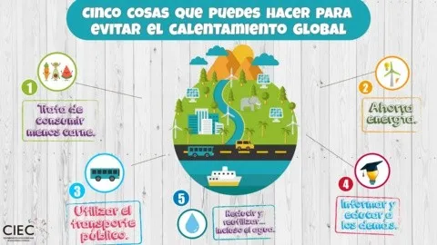

Clasificación del calentamiento global
Existen diferentes tipos de calentamiento global, cada uno con sus propias características y efectos. Uno de ellos es el calentamiento global natural, que se debe a fluctuaciones en la actividad solar y en las concentraciones de gases de efecto invernadero en la atmósfera, sin intervención humana directa. Sin embargo, el calentamiento global antropogénico es el más preocupante, ya que es causado principalmente por las actividades humanas.
Otro tipo de calentamiento global es el polar, que se refiere al aumento de la temperatura en las regiones polares, como el Ártico y la Antártida. Esto tiene consecuencias graves para los ecosistemas polares, ya que provoca el deshielo de los casquetes de hielo y el aumento del nivel del mar. Además, el calentamiento global también puede manifestarse en forma de sequías, tormentas más intensas, cambios en los patrones de lluvia y aumento de la frecuencia de fenómenos climáticos extremos.
Es importante destacar que el calentamiento global no solo afecta al clima, sino también a los ecosistemas y a la biodiversidad. Muchas especies están siendo amenazadas debido a los cambios bruscos en las temperaturas y en los patrones climáticos. Además, el aumento del nivel del mar pone en peligro a las comunidades costeras y puede provocar la desaparición de islas y zonas costeras.
En conclusión, el calentamiento global es un problema ambiental grave que requiere la atención y acción de todos. Es necesario reducir las emisiones de gases de efecto invernadero y promover el uso de energías renovables. Solo así podremos mitigar los efectos del calentamiento global y proteger nuestro planeta para las futuras generaciones.

La reacción del público al calentamiento global y su preocupación a sus impactos también están aumentando. Un informe global de 2015 por Pew Resecar Center halló que una media de 54 % lo considera «un problema muy serio». Existen diferencias regionales significativas, con los estadounidenses y chinos, cuyas economías son responsables por las mayores emisiones anuales de CO2, entre los menos preocupados. Él cambio climático futuro y los impactos asociados serán distintos en una región a otra alrededor del globo. Él cambio climático futuro y los impactos asociados serán distintos en una región a otra alrededor del globo. Él calentamiento que se evidencia en los registros de temperatura instrumental es coherente con una amplia gama de observaciones, de acuerdo con lo documentado por muchos equipos científicos independientes.

Volver a la página...